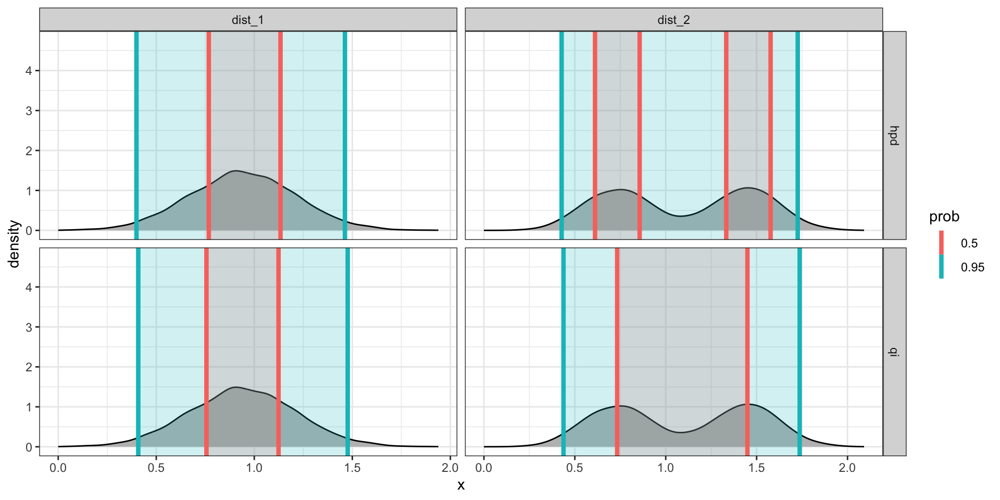
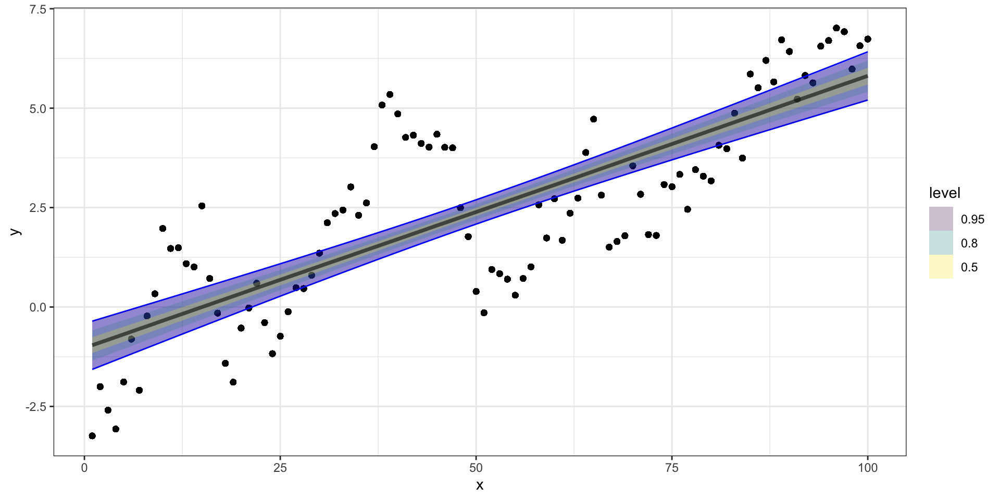
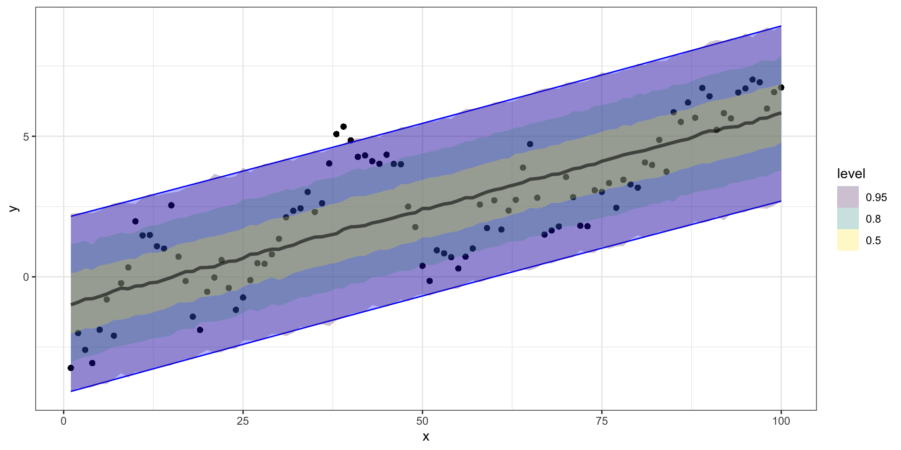
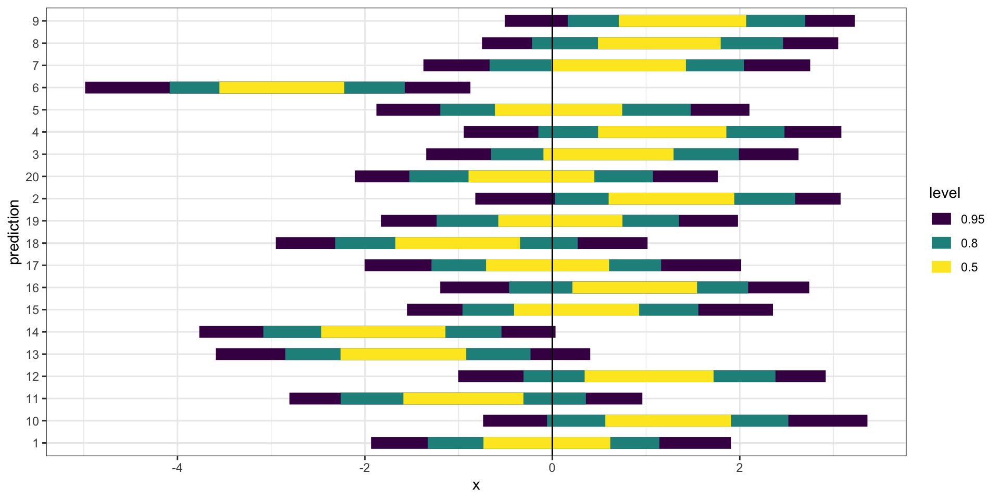

Lecture 03
Call:
lm(formula = y ~ x, data = d)
Residuals:
Min 1Q Median 3Q Max
-2.6041 -1.2142 -0.1973 1.1969 3.7072
Coefficients:
Estimate Std. Error t value Pr(>|t|)
(Intercept) -1.030315 0.310326 -3.32 0.00126 **
x 0.068409 0.005335 12.82 < 2e-16 ***
---
Signif. codes: 0 '***' 0.001 '**' 0.01 '*' 0.05 '.' 0.1 ' ' 1
Residual standard error: 1.54 on 98 degrees of freedom
Multiple R-squared: 0.6266, Adjusted R-squared: 0.6227
F-statistic: 164.4 on 1 and 98 DF, p-value: < 2.2e-16 Family: gaussian
Links: mu = identity; sigma = identity
Formula: y ~ x
Data: d (Number of observations: 100)
Draws: 4 chains, each with iter = 2000; warmup = 1000; thin = 1;
total post-warmup draws = 4000
Population-Level Effects:
Estimate Est.Error l-95% CI u-95% CI Rhat Bulk_ESS Tail_ESS
Intercept -1.03 0.30 -1.63 -0.42 1.00 4020 2851
x 0.07 0.01 0.06 0.08 1.00 4387 2662
Family Specific Parameters:
Estimate Est.Error l-95% CI u-95% CI Rhat Bulk_ESS Tail_ESS
sigma 1.55 0.12 1.35 1.80 1.00 3103 2316
Draws were sampled using sampling(NUTS). For each parameter, Bulk_ESS
and Tail_ESS are effective sample size measures, and Rhat is the potential
scale reduction factor on split chains (at convergence, Rhat = 1).# A tibble: 12,000 × 5
# Groups: .variable [3]
.chain .iteration .draw .variable .value
<int> <int> <int> <chr> <dbl>
1 1 1 1 b_Intercept -1.29
2 1 2 2 b_Intercept -1.46
3 1 3 3 b_Intercept -1.44
4 1 4 4 b_Intercept -0.414
5 1 5 5 b_Intercept -0.658
6 1 6 6 b_Intercept -1.04
7 1 7 7 b_Intercept -0.919
8 1 8 8 b_Intercept -1.06
9 1 9 9 b_Intercept -1.15
10 1 10 10 b_Intercept -0.634
# ℹ 11,990 more rows# A tibble: 4,000 × 6
.chain .iteration .draw b_Intercept b_x sigma
<int> <int> <int> <dbl> <dbl> <dbl>
1 1 1 1 -1.29 0.0662 1.48
2 1 2 2 -1.46 0.0736 1.37
3 1 3 3 -1.44 0.0735 1.40
4 1 4 4 -0.414 0.0607 1.72
5 1 5 5 -0.658 0.0664 1.62
6 1 6 6 -1.04 0.0723 1.60
7 1 7 7 -0.919 0.0656 1.56
8 1 8 8 -1.06 0.0711 1.62
9 1 9 9 -1.15 0.0727 1.54
10 1 10 10 -0.634 0.0666 1.65
# ℹ 3,990 more rows( b_ci = b_post |>
group_by(.chain, .variable) |>
tidybayes::mean_hdi(.value, .width=c(0.8, 0.95))
)# A tibble: 24 × 8
.chain .variable .value .lower .upper .width .point .interval
<int> <chr> <dbl> <dbl> <dbl> <dbl> <chr> <chr>
1 1 b_Intercept -1.03 -1.44 -0.645 0.8 mean hdi
2 1 b_x 0.0683 0.0612 0.0753 0.8 mean hdi
3 1 sigma 1.55 1.40 1.69 0.8 mean hdi
4 2 b_Intercept -1.03 -1.36 -0.618 0.8 mean hdi
5 2 b_x 0.0685 0.0619 0.0749 0.8 mean hdi
6 2 sigma 1.56 1.41 1.69 0.8 mean hdi
7 3 b_Intercept -1.03 -1.35 -0.587 0.8 mean hdi
8 3 b_x 0.0683 0.0619 0.0753 0.8 mean hdi
9 3 sigma 1.55 1.39 1.68 0.8 mean hdi
10 4 b_Intercept -1.02 -1.41 -0.641 0.8 mean hdi
# ℹ 14 more rowsmean_qi() vs mean_hdi()These differ in the use of the quantile interval vs. the highest-density interval.
# A tibble: 100 × 10
y x .fitted .lower .upper .resid .hat .sigma .cooksd .std.resid
<dbl> <int> <dbl> <dbl> <dbl> <dbl> <dbl> <dbl> <dbl> <dbl>
1 -3.24 1 -0.962 -1.57 -0.355 -2.28 0.0394 1.53 0.0467 -1.51
2 -2.00 2 -0.893 -1.49 -0.296 -1.11 0.0382 1.54 0.0107 -0.734
3 -2.59 3 -0.825 -1.41 -0.237 -1.77 0.0371 1.54 0.0264 -1.17
4 -3.07 4 -0.757 -1.34 -0.177 -2.31 0.0359 1.53 0.0436 -1.53
5 -1.88 5 -0.688 -1.26 -0.118 -1.20 0.0348 1.54 0.0113 -0.791
6 -0.807 6 -0.620 -1.18 -0.0583 -0.187 0.0338 1.55 0.000266 -0.123
7 -2.09 7 -0.551 -1.10 0.00127 -1.54 0.0327 1.54 0.0175 -1.02
8 -0.227 8 -0.483 -1.03 0.0609 0.256 0.0317 1.55 0.000466 0.169
9 0.333 9 -0.415 -0.950 0.121 0.747 0.0307 1.55 0.00384 0.493
10 1.98 10 -0.346 -0.873 0.180 2.32 0.0297 1.53 0.0358 1.53
# ℹ 90 more rows# A tibble: 100 × 4
Estimate Est.Error Q2.5 Q97.5
<dbl> <dbl> <dbl> <dbl>
1 -0.962 1.56 -3.98 2.15
2 -0.889 1.60 -4.03 2.21
3 -0.790 1.60 -3.96 2.38
4 -0.738 1.59 -3.82 2.28
5 -0.683 1.58 -3.81 2.43
6 -0.608 1.61 -3.83 2.48
7 -0.568 1.59 -3.80 2.56
8 -0.454 1.58 -3.51 2.63
9 -0.464 1.57 -3.43 2.62
10 -0.353 1.56 -3.38 2.80
# ℹ 90 more rows# A tibble: 400,000 × 7
# Groups: x, y, .row [100]
x y .row .chain .iteration .draw
<int> <dbl> <int> <int> <int> <int>
1 1 -3.24 1 NA NA 1
2 1 -3.24 1 NA NA 2
3 1 -3.24 1 NA NA 3
4 1 -3.24 1 NA NA 4
5 1 -3.24 1 NA NA 5
6 1 -3.24 1 NA NA 6
7 1 -3.24 1 NA NA 7
8 1 -3.24 1 NA NA 8
9 1 -3.24 1 NA NA 9
10 1 -3.24 1 NA NA 10
# ℹ 399,990 more rows
# ℹ 1 more variable: .prediction <dbl># A tibble: 400,000 × 7
# Groups: x, y, .row [100]
x y .row .chain .iteration .draw
<int> <dbl> <int> <int> <int> <int>
1 1 -3.24 1 NA NA 1
2 1 -3.24 1 NA NA 2
3 1 -3.24 1 NA NA 3
4 1 -3.24 1 NA NA 4
5 1 -3.24 1 NA NA 5
6 1 -3.24 1 NA NA 6
7 1 -3.24 1 NA NA 7
8 1 -3.24 1 NA NA 8
9 1 -3.24 1 NA NA 9
10 1 -3.24 1 NA NA 10
# ℹ 399,990 more rows
# ℹ 1 more variable: .epred <dbl>

If we remember back to our first regression class, one common option is \(R^2\) which gives us the variability in \(y\) explained by our model.
Quick review:
\[ \underset{\text{Total}}{\sum_{i=1}^n \left(y_i - \bar{y}\right)^2} = \underset{\text{Model}}{\sum_{i=1}^n \left(\hat{y}_i - \bar{y}\right)^2} + \underset{\text{Error }}{\sum_{i=1}^n \left(y_i - \hat{y}_i\right)^2} \]
\[ R^2 = \frac{SS_{model}}{SS_{total}} = \frac{\sum_{i=1}^n \left(\hat{Y}_i - \bar{Y}\right)^2}{\sum_{i=1}^n \left(Y_i - \bar{Y}\right)^2} = \frac{\text{Var}(\hat{\boldsymbol{Y}}) }{ \text{Var}({\boldsymbol{Y}}) } = \text{Cor}(\boldsymbol{Y}, \hat{\boldsymbol{Y}})^2 \]
( b_post_full = b |>
tidybayes::spread_draws(b_Intercept, b_x, sigma) |>
tidyr::expand_grid(d) |>
mutate(
y_hat = b_Intercept + b_x * x,
resid = y - y_hat
)
)# A tibble: 400,000 × 10
.chain .iteration .draw b_Intercept b_x sigma x y y_hat resid
<int> <int> <int> <dbl> <dbl> <dbl> <int> <dbl> <dbl> <dbl>
1 1 1 1 -1.29 0.0662 1.48 1 -3.24 -1.23 -2.01
2 1 1 1 -1.29 0.0662 1.48 2 -2.00 -1.16 -0.842
3 1 1 1 -1.29 0.0662 1.48 3 -2.59 -1.09 -1.50
4 1 1 1 -1.29 0.0662 1.48 4 -3.07 -1.03 -2.04
5 1 1 1 -1.29 0.0662 1.48 5 -1.88 -0.962 -0.923
6 1 1 1 -1.29 0.0662 1.48 6 -0.807 -0.895 0.0887
7 1 1 1 -1.29 0.0662 1.48 7 -2.09 -0.829 -1.26
8 1 1 1 -1.29 0.0662 1.48 8 -0.227 -0.763 0.536
9 1 1 1 -1.29 0.0662 1.48 9 0.333 -0.697 1.03
10 1 1 1 -1.29 0.0662 1.48 10 1.98 -0.630 2.61
# ℹ 399,990 more rowsWhen we compute any statistic for our model we want to do so at each iteration so that we can obtain the posterior distribution of that particular statistic (e.g. the posterior distribution of \(R^2\) in this case).
# A tibble: 1,000 × 3
.iteration R2_classic R2_bayes
<int> <dbl> <dbl>
1 1 0.602 0.612
2 2 0.651 0.634
3 3 0.666 0.639
4 4 0.614 0.619
5 5 0.621 0.619
6 6 0.707 0.652
7 7 0.571 0.602
8 8 0.708 0.652
9 9 0.580 0.605
10 10 0.629 0.626
# ℹ 990 more rows# A tibble: 100 × 8
y x .fitted .resid .hat .sigma
<dbl> <int> <dbl> <dbl> <dbl> <dbl>
1 -3.24 1 -0.962 -2.28 0.0394 1.53
2 -2.00 2 -0.893 -1.11 0.0382 1.54
3 -2.59 3 -0.825 -1.77 0.0371 1.54
4 -3.07 4 -0.757 -2.31 0.0359 1.53
5 -1.88 5 -0.688 -1.20 0.0348 1.54
6 -0.807 6 -0.620 -0.187 0.0338 1.55
7 -2.09 7 -0.551 -1.54 0.0327 1.54
8 -0.227 8 -0.483 0.256 0.0317 1.55
9 0.333 9 -0.415 0.747 0.0307 1.55
10 1.98 10 -0.346 2.32 0.0297 1.53
# ℹ 90 more rows
# ℹ 2 more variables: .cooksd <dbl>,
# .std.resid <dbl>Here we calculate the posterior mean of \(\hat{y}\) and use that to estimate \(R^2\),
Some new issues,
\(R^2\) doesn’t really make sense in the Bayesian context
multiple possible definitions with different properties
fundamental equality doesn’t hold anymore
Possible to have \(R^2 > 1\)
Some old issues,
\(R^2\) always increases (or stays the same) when adding a predictor
\(R^2\) is highly susceptible to over fitting
\(R^2\) is sensitive to outliers
\(R^2\) depends heavily on values of \(y\) (can differ for two equivalent models)
The traditional definition of rmse is as follows
\[ \text{RMSE} = \sqrt{ \frac{1}{n} \sum_{i=1}^n \left(y_i - \hat{y_i} \right)^2 } \]
In the bayesian context, we have posterior samples from each parameter / prediction of interest so we can express this as
\[ \frac{1}{m} \sum_{s=1}^{m} \sqrt{ \frac{1}{n} \sum_{i=1}^n \left(y_i - {\hat{y}}_{i,s} \right)^2 } \]
where \(m\) is the number of iterations and \(\hat{Y}^s_i\) is the prediction for \(Y_i\) at iteration \(s\).
Another approach is the continuous rank probability score which comes from the probabilistic forecasting literature, it compares the full posterior predictive distribution to the observation / truth.
\[ \text{CRPS} = \int_{-\infty}^\infty \left(F_{\hat{y}}(z) - {1}_{z \geq y}\right)^2 dz \]
where \(F_{\hat{y}}\) is the CDF of \(\hat{y}\) (the posterior predictive distribution for \(y\)) and \({1}_{z \geq Y}\) is an indicator function which equals 1 when \(z \geq y\), the true/observed value of \(y\).
Since this calculates a score for a single probabilistic prediction we can naturally extend it to multiple predictions by calculating an average CRPS \[ \frac{1}{n} \sum_{i=1}^n \int_{-\infty}^\infty \left(F_{\hat{y}_i}(z) - {1}_{z \geq y_i}\right)^2 dz \]
One final method, which assesses model calibration is to examine how well credible intervals, derived from the posterior predictive distributions of the \(y\)s, capture the true/observed values.
# A tibble: 1 × 3
.metric .estimator .estimate
<chr> <chr> <dbl>
1 rmse standard 1.52( b_rmse = b_post_full |>
group_by(.chain, .iteration) |>
summarize(
rmse = sqrt( sum( (y - y_hat)^2 ) / n())
)
)# A tibble: 4,000 × 3
# Groups: .chain [4]
.chain .iteration rmse
<int> <int> <dbl>
1 1 1 1.57
2 1 2 1.54
3 1 3 1.54
4 1 4 1.56
5 1 5 1.55
6 1 6 1.54
7 1 7 1.53
8 1 8 1.53
9 1 9 1.53
10 1 10 1.56
# ℹ 3,990 more rows# A tibble: 400 × 3
# Groups: .chain [4]
.chain x crps
<int> <int> <dbl>
1 1 1 2.10
2 1 2 0.938
3 1 3 1.60
4 1 4 2.15
5 1 5 1.03
6 1 6 0.117
7 1 7 1.38
8 1 8 0.151
9 1 9 0.594
10 1 10 2.17
# ℹ 390 more rows( b_cover = b_post_full |>
group_by(x, y) |>
tidybayes::mean_hdi(
y_hat, .prob = c(0.5,0.9,0.95)
)
)# A tibble: 300 × 8
x y y_hat .lower .upper .width .point .interval
<int> <dbl> <dbl> <dbl> <dbl> <dbl> <chr> <chr>
1 1 -3.24 -0.960 -1.13 -0.736 0.5 mean hdi
2 2 -2.00 -0.892 -1.07 -0.676 0.5 mean hdi
3 3 -2.59 -0.823 -0.988 -0.602 0.5 mean hdi
4 4 -3.07 -0.755 -0.938 -0.558 0.5 mean hdi
5 5 -1.88 -0.687 -0.868 -0.493 0.5 mean hdi
6 6 -0.807 -0.618 -0.778 -0.408 0.5 mean hdi
7 7 -2.09 -0.550 -0.730 -0.367 0.5 mean hdi
8 8 -0.227 -0.482 -0.644 -0.285 0.5 mean hdi
9 9 0.333 -0.413 -0.578 -0.226 0.5 mean hdi
10 10 1.98 -0.345 -0.505 -0.157 0.5 mean hdi
# ℹ 290 more rowsSta 344/644 - Fall 2023